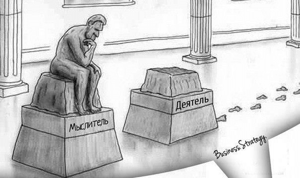

Бесцелевые стратегии
Два вида постановки цели, которые нам помогут ответить на вопрос “Как достигать цели?”:
Стратегический метод:
Расфокусировка цели. Примеры: Айкидо, Дзен ученья
Тактический метод
Концентрация на цели. Примеры: S.M.A.R.T, списки желаний
Определить смысл существования - задача не из простых. Когда человек достигает цели, то часто разочаровывается. Когда человек еще не достиг цели - он находится в неудовлетворенном состоянии. Тактический подход в постановки цели ставит перед собой задачу исключить разочарование при достижении желаемого и снять напряжение по пути к мечте. Используются известные техники, основанные на работе со списком желаний и S.M.A.R.T. подхода.
Однако бывает, человек годами старается разобраться со своими желаниями. Как быть?
Удивительный вариант - отказаться от постановки цели вовсе. Как это работает? Используется стратегический подход в определении цели. Первое - делается расфокусировка цели. В айкидо - одно из самых удивительных боевых искусств - есть три основополагающих принципа: не открываться, не ждать и не смотреть. Рассфокусировка как раз и соответствует принципу не смотреть:
Не смотреть - этот принцип означает не ставить перед собой четкую цель, не быть ведомым. Не смотреть означает выстроить себя оптимально во всех направлениях, быть гибким и наблюдательным. Менять вектор развития - это цель с плавающим фокусом.
Не ждать - этот принцип означает начинать первым. Самому создавать ситуацию. Создавать свои правила и свою игру. Это стратегический подход, так как требует изобретательности. Такое возможно в том случае, когда вы обладаете инициативой.
Не открываться - это принцип означает не создавать слабостей в своей форме. Идеальным быть нельзя. Но можно располагаться защищенной стороной в направлении трудностей и опасностей. А слабые места оставлять в недосягаемости. Изучайте свои сильные и слабые позиции и будьте бдительным к себе.
Стратегический подход к постановке цели оставляет ум гибким. Не ставит четких глобальных рамок, но вместе с тем стратег всегда обладает локальной «целью», от которой в любой момент может отказаться в силу использования новых возможностей.
